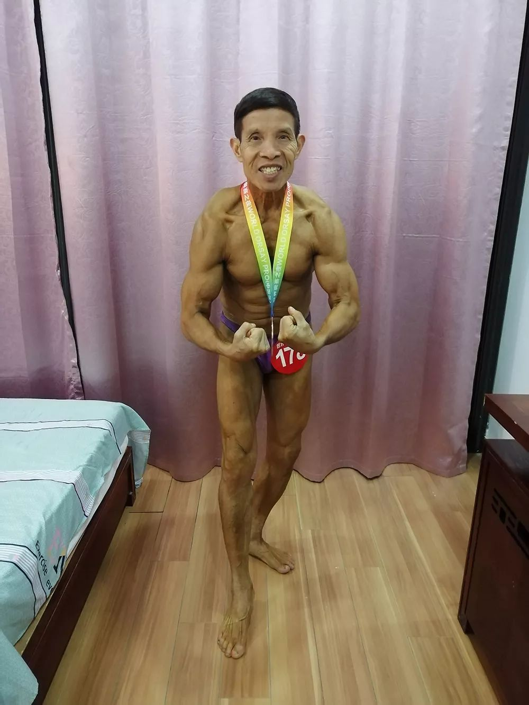

在人间丨武汉七旬健美冠军，没能度过这个冬天
原文链接 备份链接 凤凰新闻客户端 凤凰网在人间工作室出品 2020年1月18日上午，天气像往常一样晴朗。在汉口中山公园西南角的一间健身房里，72岁的邱钧正向笔者描绘自己的规划——今年6月，他将前往南京参加“世界奥赛之夜”健美比赛，而 …
澎湃新闻记者 沈文迪
邱钧给人的印象，大多和健身有关——每天早上拎着装有哑铃和水杯的红色布袋出现在公园，在健身器材上上下翻飞；下午又来到健身房，和“小徒弟们”挥汗如雨，间歇能一口气吃下七八个水煮鸡蛋；又或者是在各地的健美比赛中，浑身涂满橄榄油的他展示着与年龄不相符的傲人肌肉。
认识邱钧的人至今都不愿相信，这个身高一米七、走起路来虎虎生风的健身达人，竟然会在一夜之间输给新冠肺炎。但他们回头一想，邱钧已经72岁了，再强健的肌肉，也敌不过岁月和疾病的侵蚀。
从1月24日发现病情到确诊新冠肺炎入院，邱钧用了11天。住院3天后，他便匆匆离世。
健美冠军
上世纪50年代，邱钧随当兵的父亲从福州来到武汉汉口。受生活环境影响，每天他看着士兵们出操、跑步，便也跟着效仿学习。
中专毕业后，16岁的邱钧进入武昌车辆厂，从工人一直干到运输车司机，他始终兢兢业业。单调的生活之余，他喜欢去操场上跑上十来圈，俯卧撑和引体向上是他少有的娱乐。
1990年，邱钧代表厂里参加湖北省第一届健美大赛，并拿到全省第五的成绩。从此，他迷上了健美。
2003年非典爆发之际，邱钧从厂里退休，两年后他的妻子过世，他和唯一的女儿邱玥相依为命，好在还有健身这个爱好，他开启了一条不同寻常的老年生活。
海容涛在2011年与邱玥相识相爱，一年后他们开始谈婚论嫁。当邱玥介绍起父亲时，一脸自豪。海容涛第一次看到未来岳父的照片时又惊又喜，觉得原来真有人这么大年纪还能保持这么好的身材。
女婿上门的时间比预计的推迟了三个月，那段时间邱钧正在准备健美比赛，每天都泡在健身房里，同时必须严格控制饮食。等比赛过后，邱钧这才精心布置了家里，准备了十道菜，邀请女婿上门。

刚结束健美比赛的邱钧。 受访者供图
邱钧每天早早起床，吃的都是蒸馒头、红薯、鸡蛋和番茄，随后把健身器材装进布袋，风风火火地就往公园赶。
公园里有个健身角，每当邱钧露出肌肉，总会引来路人围观、拍照。等到下午，邱钧又出现在健身房，与每个前来锻炼的人打着招呼，不管男女老少、中国人还是外国人，每到一个健身房，他总能迅速认识一帮朋友、徒弟或者粉丝。
海容涛说，在家里邱钧是个不善言辞的老人，从来都是说得少、做得多。但到了公园或健身房，他就变了个人，好像年轻了40岁，滔滔不绝地跟人探讨如何规范动作、使用器材，并经常指导、矫正新手的动作。

在健身房指导他人的邱钧。 图来自凤凰网
结婚后，原本体重将近180斤的海容涛在岳父的带领下一同锻炼，三个月内减了30斤。
2016年，他们全家报名了武汉马拉松赛，邱钧和邱玥参加的是健康跑，海容涛报名跑全程马拉松。在健康跑结束后，父女俩坐着地铁来到终点等待着海容涛。此时已经跑了42公里的海容涛已经筋疲力尽，每一步都艰难蹒跚。
但当他看到终点前100多米为他振臂加油的妻子和岳父时，他形容自己“就像在沙漠里喝到了甘甜的水”，全力完成了冲刺。
“那个瞬间应该是我们家最温馨、最动人的一个场景了。”海容涛说。
除此以外，邱钧经常会外出参加健美比赛，海容涛全程陪同，在比赛中到处寻找好的拍摄角度，记录下岳父的光辉时刻。
去年邱钧在北京的一次比赛中获得了元老级别的金牌，那是岳父最高兴的一次，开心得像个孩子，把硕大的奖牌挂在身前，走到风景合适处，便停下说，“来容涛，照张相。”随后掀起了上衣、摆起了pose。
在2019年参加完淮安“奥赛之夜”的健美比赛后，回程路上海容涛对岳父说，爸，我回去也练练，下次跟你一起参加比赛。邱钧连忙答应，“赶紧搞啊！”
如果不出意外，他们会一同参加2020年6月在南京举办的“奥赛之夜”健美比赛。
病毒来袭
直到1月23日，邱钧还在坚持锻炼，彼时虽然健身房已经歇业，但他还是雷打不动地去到公园锻炼。可那天海容涛发现了异常。
展示肌肉的邱钧。 图来自楚天都市报
大年三十的早上，邱玥煮了面条，海容涛起床后发现岳父已经去了公园，但邱玥说父亲早上没怎么吃，这引起了海容涛的警觉，“老爷子健身消耗大，很少会没胃口”。
海容涛从新冠肺炎刚爆发之际就开始关注，把新闻里提到的感染者症状都记在心里，并不断提示岳父，最近还是少出门，出门戴口罩。
但他知道，岳父认为自己身强体壮不会感染，说太多会伤他自尊，所以没有强制要求他防护或者禁足。
“那会我倒不担心健身房的人，他们身体都还可以，主要是公园人来人往的太多了，大多是老人。”海容涛说。
1月10日，一家人坐下来吃饭时他主动提出了这个问题，邱钧听他说了半天，最后憋出来一句话，“该么样就么样”（注：该怎么样还是怎么样），接着又说，“别人都没戴口罩，我戴口罩多难看。”
听了这话，海容涛也说不了什么。当时他所接收到的信息都是零碎的，没有比较可靠的预警说服老人。后来1月24日，湖北省启动重大突发公共卫生事件Ⅰ级响应。
之前海容涛从没见到岳父生过病。但谨小慎微的他在发觉岳父食欲不振的当天下午，就赶紧去买了三根体温计回来，分别给家人测量。邱钧的体温为37.6摄氏度，依旧食欲不振，此时距离春节联欢晚会开始仅剩两三个小时。
海容涛当机立断，立马让妻子收拾东西住出去，自己则陪着邱钧进行隔离，看他的情况是否会好转。
邱玥虽然也想留下来照顾父亲，但海容涛坚持分开，并安慰岳父可能就是个小感冒。邱钧没有多说，当晚一个人在屋里看着春晚，早早地睡了。
1月25日一早，海容涛冲到药房抢了15天剂量的感冒药，同时又加购了口罩。回到家后他便给自己和岳父戴上口罩和手套，两人一人一个房间，除了送饭一般不进行接触。
海容涛介绍，那两天岳父的情况并没有好转，胃口越来越差，晚上他甚至能听见从隔壁传来的呻吟声，“那是老爷子发烧痛苦，哎，我听了实在难受！”海容涛见岳父的病情没有好转，就想着把他送去医院。
1月29日，邱钧在社区医院验血后，医生直接让他转去华中科技大学同济医学院附属协和医院。但去到协和医院后，海容涛感到害怕，“走廊里挤满了人，排不上队拿不到号，还有人躺在地上。”
无奈之下他们只能回家，第二天辗转多家医院，最后终于在湖北省新华医院做了CT检查，诊断意见是双肺多发感染性病变。
海容涛一个人拿着白茫茫一片的CT报告去见医生，医生表示如果要确诊新冠肺炎还需进行核酸检测，只有确诊了才能分配床位住院。这期间只能给病人进行输液，输液药物一天一开。

邱钧的CT检查报告。受访者供图
海容涛有些不理解，他认为此时应该尽量避免去到人流密集场所，防止交叉感染，但他此刻只能带着邱钧前往输液室。
他翻出了一副墨镜用于眼睛的临时防护，两人还分别穿着雨披当作防护服，略显突兀地穿梭在医院里。尤其是受病痛折磨的邱钧，此时已经全然顾不上他人的眼光，女婿让干嘛，他就照做，没有多余的话。
难求一床
邱钧的转变海容涛都看在眼里，从一开始的讳疾忌医、百般拒绝，到就诊时的忧心忡忡、言听计从。
“他可能有些怕了，担心自己如果得这个病怎么办。”海容涛说，在医院动辄就要排队排上个把小时，为了让岳父多休息会，他只能自己上。
海容涛穿着雨披，想办法把自己裹得密不透风，但仍然感到深深的恐惧。在某个时间点，他觉得自己如履薄冰、进退两难，透过朦胧的墨镜，他只看到人们焦虑和绝望的样子。
而邱钧的情况并没有随着输液好转，从前可以扛着杠铃起蹲毫不费力，而如今走路都会气喘，而且病情以肉眼可见的速度日益加重，女婿为他准备的鸡汤他也喝不了几口。
1月31日凌晨，海容涛来到协和医院，只见门口停满了车，病人在车里坐着，家属在医院排队。他也开始排队预约新冠肺炎核酸检测，戴着潜水面罩、穿着雨衣，让邱钧在家里等。
2月1日上午10点，邱钧完成咽拭子采样，2月2日得到结果，阳性。

邱钧的入诊通知单。受访者供图
来不及难过，海容涛立即拿着确诊单联系社区，想要上报到区里寻求医院床位。在住院之前，邱钧仍然要到新华医院进行输液。在这个间隙，心理压力已经到达极限的他瞒着岳父，给自己挂了个号。
他告诉医生，自己的岳父已经确诊，他担心自己也有危险，想拍一个CT，医生答应了。等他自己的肺部CT被送到医生手上后，海容涛能感觉自己快要窒息，甚至紧张地把没问题听成了有问题。直到医生重复说正常，他才仿佛从地狱回到了人间，浑身都软了下来。
走出诊室后，海容涛给妻子打了个电话报平安，妻子无比激动。
紧接着又一个好消息传来，社区通知海容涛，武汉市红十字医院可以收治邱钧，让他赶紧带人去。
海容涛知道，此时床位非常紧张，他在去医院前甚至告知邱钧，如果见到了医生，直接往地上一倒，这样有可能得到一个床位。邱钧说好。
但等两人来到红十字医院门口，保安将他们拦住，核对名单并没有找到邱钧的名字，海容涛给社区打电话反映，社区也派人来到医院进行协调，但没有效果。三个小时后海容涛又把岳父带回了家。
2月3日，海容涛自己来到红十字医院门口确认名单，直到下午六点才看到邱钧的名字，连忙把人送进医院。
由于医院有着严格的管控，只允许病人进入，家属不能陪同，对于极少去医院看病的邱钧来说，他连挂号都不会，只能一趟趟步履艰难地走回到医院门口，向海容涛询问。直到邱钧进去后很久都没有出来，海容涛这才三步一回头地离开。
回到家后，他第一件事就是消毒，给家里每个角落喷洒酒精，晚上又给岳父去送饭。隔着门口的护栏，邱钧告诉女婿，自己没有床位，只能坐着输液。第二天海容涛问朋友借了一张折叠床又送了过去。
等到2月5日下午，邱钧给女婿打来电话，说要几桶泡面。海容涛一听高兴得不行，“这是治疗有效果了，有胃口了。”他立马买了六桶泡面送了过去。
还是隔着护栏，邱钧还问买这么多干嘛，海容涛就说留着吃。回去后海容涛立马把消息告诉给了亲戚们，大家都觉得老爷子这是要好起来了。
最后一面
2月6日上午八点，海容涛接到红十字医院医生的电话，邱钧病逝。
“当时我都不知道要先穿衣服还是先穿裤子。”海容涛说，自己花了很久才冷静下来，大口呼吸，手机攥在手上，谁也不告诉。
他还要为岳父办手续，为此需要进到医院里，这是风险最高的，他怠慢不得。
他带上所有证件赶往医院。等来到一个看起来像输液室的二三十平米的地方，他看到邱钧被白布包裹着，躺在自己借来的那张折叠床上，护士用屏风做了个隔断，一边还有6、7个人在输液。
海容涛走上前去，给邱钧磕了三个头。“磕第一个头的时候我就在想，怎么会这样呢？”每磕一下，他都觉得这是一场梦，那个壮硕无比的老头会醒过来吧。但等他磕完头，眼罩里满是泪水，邱钧依旧躺在那里。
邱钧有个习惯，自己重要的东西包括身份证都放在腰包里。为了拿出腰包，海容涛费了很大的劲，因为岳父体格健硕，他轻易搬不动他，一旁的护士过来帮忙，用剪刀剪开腰包，这才取了下来。
海容涛发现，腰包上还带着岳父的余温，回忆至此，他哽咽了很久。
他像“行尸走肉一般”办完手续，邱钧的遗体被送上了殡仪馆的车，一同被带走的还有另外两具遗体。来不及再看一眼，来不及说声走好，邱钧的遗体被匆匆运走，海容涛看着远去的白车，只知道哭。
回到家已是中午，海容涛花了20分钟让自己冷静，随后给妻子打去了电话。
“早上八点多医院通知，爸爸走了。”
“怎么可能，你在开玩笑吧？”
海容涛听到妻子这话，绷不住大哭起来，之前的冷静全然无用，两人在电话里嚎啕大哭。
哭完后海容涛又一一通知家属，每打一个电话，他都大哭一次，此前压抑的情感如今都爆发了出来。
到了晚上，恍惚之间海容涛感觉到点了，邱钧这会应该刚从健身房出来要回家了。但他转念一想，岳父已然不在了。
这之后的日子，海容涛作为密切接触者，被社区安排到了专门的酒店进行隔离。因为不能开空调，他带着电热毯；一日三餐都有人送，但有时吃了又饿，他带上了过年没吃完的零食；为了保证营养，他还带了罐奶粉，一个人在酒店里慢慢恢复平静。
妻子的情况则不是很好，从大年三十分别，她就再没见过父亲，和海容涛也只是远远地见过几面。她不接电话，只在微信上打字，也不敢和丈夫视频。关于父亲的悼文一律不看，只是默默收藏起来。
“保小家，就是保大家”
邱钧的离去，让很多人感到震惊，许多曾经与他一同健身的朋友纷纷留言，回忆老爷子的精神矍铄和和蔼可敬。
也有人问，这么健康的邱老怎么一夜之间就离开了大家？海容涛说，老人毕竟72岁了，再强健的肌肉，也耐不住岁数在这了。
北京大学第一医院感染疾病科主任王贵强在接受访谈时提到，免疫是把双刃剑，如果一个患者病毒很多，免疫能力也很强，容易出现局部斗争，这样会带来炎症因子风暴，导致病情迅速爆发恶化。
老人已经走了，在他的讣告中，他的女儿和女婿写道，“在武汉全城抗疫的特殊情况下，我们不设灵堂，丧事从简，告别仪式根据疫情结束情况再另行通知。”

邱钧的讣告。受访者供图
简单地处理完岳父的后事，海容涛开始了隔离的生活。除了每天测量体温，他需要做的事并不多。回忆起这几天的经历，有时他会自责，“我是不是做得太绝了，把他们彻底隔离开来，家里人可能会觉得没帮上什么忙。”
但他也强调，自己的初衷是为了防止人传人，他见过太多悲惨的故事，“我见过最惨的就是一家5口全死了，还有父母都得病住院了，留下7、8岁的孩子，邻里之间照顾着。”
尽管海容涛非常想念和担心妻子，他不敢和妻子见面，“我岳父走了几天以后，我给她买了四五筐东西，放到她门口我就走，她再下来拿，基本上我俩是见不到面的。”
2月10日下午，一位马拉松跑友找到海容涛，说自己的岳母也确诊病逝了，自己的妻子要开车冲到医院去见最后一面，希望海容涛帮着劝劝。
海容涛给跑友的妻子打去电话，介绍了自己的情况，然后先让她把驻车靠边，对她说，“你家里还有两个宝宝，你去（病毒）高密度的地方，万一带了病毒回家，你孩子怎么办？”电话那头的人一边哭一边说着什么，最终还是听了进去。
海容涛说，中国人是想最后见一面的，但在这种情况下真的没办法。他觉得，“保小家，就是保大家。在前线的医护工作者们都不容易，我们彼此也要做好防护，避免交叉感染。”
本期编辑 常琛
推荐阅读


原文链接 备份链接 凤凰新闻客户端 凤凰网在人间工作室出品 2020年1月18日上午，天气像往常一样晴朗。在汉口中山公园西南角的一间健身房里，72岁的邱钧正向笔者描绘自己的规划——今年6月，他将前往南京参加“世界奥赛之夜”健美比赛，而 …
原文链接 备份链接 来源：雪球App，作者： 八点健闻，（https://xueqiu.com/1553077980/140215390） 岳父发烧9天 ，妻子发烧6天 ，CT报告都显示“双肺严重感染” ，却一直没能得到检测 ，确认是不是 …
原文链接 备份链接 赵平和冯安，武汉一对年逾60的夫妻，妻子赵平先感染，因为医院床位不足，只能自行居家隔离，丈夫冯安随后也被感染。身在武汉，他们是为数众多的，等不到床位、无法确诊、甚至没有资格计入统计数字的人。他们没有从医生口中听到“确 …
原文链接 备份链接 “如果再征召，你就报名，争取加入第二支队伍。我结束隔离后，也会加入心理援助队伍。你去，我也去。他们不能来，我们过去！” 配图 | 关斌斌 征 稿 从2019年12月8日首例武汉新型冠状病毒肺炎患者出现，到2020年1 …
原文链接 备份链接 记者/兰子木 韩谦 李佳楠实习记者/周缦卿 龙天音**** 编辑/杨宝璐 宋建华 院感科在培训医生正确穿戴防护服 “院感科”，全名“医院感染管理科”。顾名思义，其主要工作就是对医院感染进行有效预防与控制。 在此次新冠 …